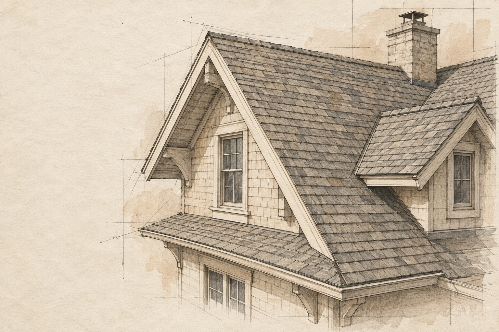

THE ROOFING NOTEBOOK
Look a little longer.
Rooflines, materials, and details worth noticing. A visual notebook for the questions you bring to a roofing conversation.
The photographs and film below come from supplied roofing reference footage. Drawings are concept illustrations. This is not a gallery of verified company projects.
LEARNING TO SEE THE ROOFThree details.
Three details.
One roof.
Select a detail to see what the name refers to.
The ridge is the upper line where two sloping roof surfaces meet.

In the details.
Have something you want us to look at?
You don’t need the roofing term. Tell us what you’ve noticed.
Request an inspection